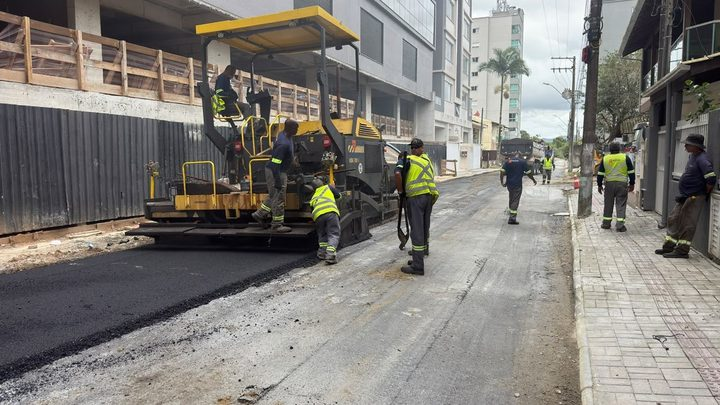
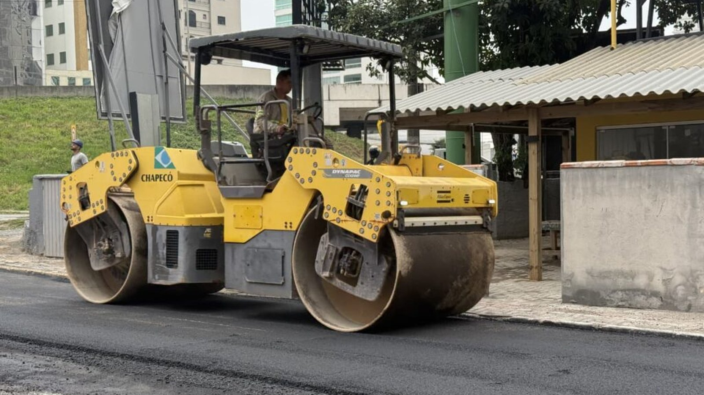

Itapema · InfraestruturaO asfalto chegou à Rua 282 nesta quinta, 41 dias depois de a Prefeitura de Itapema publicar que a rua já tinha entrado na etapa de pavimentação
A rua que fez o mesmo caminho e chegou ao fim.
Em 10 de junho, a Prefeitura de Itapema publicou que o asfaltamento da Rua 416, no Morretes, tinha começado, em duas quadras identificadas no texto. Na nota desta quinta-feira, 29 de outubro, 141 dias depois, a mesma rua aparece em preparo do solo, que é etapa anterior ao asfalto. A 416 saiu em cinco das doze notas do programa desde junho, e as três últimas não dizem qual trecho está sendo mexido. Lemos as doze notas uma a uma para montar essa linha do tempo.
Em 30 segundos · Modo de Leitura, formato original Santa Informa
A Rua 416 fica no bairro Morretes, em Itapema.
Ela entra no programa Avança Itapema.
Em 10 de junho saiu uma nota da Prefeitura.
O título dizia que a 416 recebia pavimentação asfáltica.
O texto dizia que o asfaltamento tinha começado naquela quarta.
Eram duas quadras.
Da Marginal até a Rua 406C.
E da 406C até a 406E.
A nota dizia que a rua entrava numa das etapas finais.
Depois disso a 416 reapareceu quatro vezes.
Em 17 de julho, com calçadas, entre a 406C e a 406E.
Em 16 de setembro, com drenagem pluvial.
Em 21 de outubro, em preparação para a pavimentação.
Em 29 de outubro, em preparo do solo.
De 10 de junho a 29 de outubro dá 141 dias.
Preparo do solo vem antes do asfalto.
As duas primeiras notas diziam o trecho.
As três últimas não dizem.
Então não dá para saber se é a mesma quadra.
Pode ser um trecho novo da mesma rua.
A Prefeitura não escreve qual é.
Isso já tinha acontecido com a Rua 282.
A 282 foi anunciada na pavimentação em 18 de setembro.
O asfalto chegou nesta quinta, 41 dias depois.
A Rua 422 levou 109 dias do preparo ao asfalto.
A Rua 414 está há 86 dias sem nota de asfalto.
A Rua 206 entrou nas notas em 16 de setembro.
O asfalto dela estava previsto para sexta, 30 de outubro.
A nota põe uma condição: se o tempo deixar.
A Rua 420 recebeu asfalto duas vezes.
Nas duas a nota escreveu trecho.
Ou seja, é obra por pedaço, e isso é normal.
O problema não é o pedaço.
É a nota não dizer qual pedaço.
A busca do site por cronograma devolve só notícia.
Nenhuma página lista rua, trecho e prazo.
Não falamos com a Secretaria de Obras.
Tudo aqui sai das notas da própria Prefeitura.
InfraestruturaPublicada em Redação Santa Informa

A nota do Avança Itapema desta quinta-feira, 29 de outubro, lista onze frentes de obra pela cidade. Uma linha dela diz assim: “Na Rua 416, está sendo realizado o preparo do solo”. Preparo do solo é a etapa que vem antes do asfalto. E a Rua 416, no Morretes, já teve o seu dia de asfalto anunciado, em 10 de junho, numa nota com título próprio: “Avança Itapema: Rua 416 recebe pavimentação asfáltica no Morretes”. O texto dizia que o asfaltamento “iniciou nesta quarta-feira”, que a obra pegava duas quadras, da Marginal até a Rua 406C e da 406C até a 406E, e que a rua entrava “em uma das etapas finais da obra”. Entre uma nota e outra passaram 141 dias.
Fomos atrás de todas as notas do programa publicadas no site da Prefeitura desde junho. São doze, e a Rua 416 aparece em cinco. Em 10 de junho, no asfalto. Em 17 de julho, em calçadas, entre a 406C e a 406E. Em 16 de setembro, em drenagem pluvial. Em 21 de outubro, em “preparação para a pavimentação”. E agora, em preparo do solo. As duas primeiras dizem qual pedaço da rua está sendo mexido. As três últimas citam só o número da via. Então não dá para afirmar que a quadra de junho foi desfeita: pode ser outro trecho da mesma 416. O morador é que não tem como saber.
A Rua 282 passou pela mesma inversão: foi anunciada na etapa de pavimentação em 18 de setembro e voltou à preparação em outubro. Nesse caso teve final feliz, e o asfalto chegou nesta quinta, 41 dias depois do anúncio. Na mesma série de notas, a Rua 422 levou 109 dias entre o preparo do solo, em 18 de junho, e o asfalto de um trecho, em 5 de outubro. A Rua 414 está em obra desde 4 de agosto, já teve bocas de lobo, preparo de solo e, agora, calçada, e nunca ganhou nota de asfalto: são 86 dias. A Rua 206 entrou na conta em 16 de setembro, com asfalto previsto para esta sexta, 30 de outubro, “caso as condições climáticas sejam favoráveis”.
Vale dizer o outro lado. A Prefeitura trabalha por trecho e escreve isso quando escreve: nas duas vezes em que a Rua 420 apareceu asfaltada, em 25 de agosto e em 5 de outubro, a nota usou a palavra “trecho”. Asfaltar rua comprida por partes é prática corrente, e ninguém espera a via inteira de uma vez. O que muda a vida de quem mora ali é saber se o seu quarteirão já está pronto ou se vai esperar a próxima leva. Esse dado existe na Secretaria de Obras e cabe numa linha a mais em cada nota.
O resumo de 30 segundos está no topo e a versão completa é o texto acima. Aqui ficam as três leituras da casa sobre o mesmo assunto.
Clara, a otimista
Tem uma coisa boa nessa história que passa batido: a Prefeitura publica. Doze notas em cinco meses, com nome de rua, tipo de serviço e, em boa parte delas, o trecho. É por isso que esta matéria existe. Cidade que não conta o que faz não dá nem para cobrar, e aqui dá.
E o programa entrega. A Rua 282 saiu do papel nesta quinta, a 422 ganhou asfalto em outubro, a 420 ganhou em agosto e em outubro, a Estrada Geral do Sertão do Trombudo foi asfaltada em julho. A 416 pode estar numa quadra nova, e não numa volta atrás. Se for isso, e tem boa chance de ser, o bairro Morretes está ganhando rua asfaltada aos poucos, do jeito que obra de verdade acontece.
Seu Prudêncio, o criterioso
Merece atenção a redação das notas, mais do que o ritmo da obra. Quando o texto escreve “entre a Marginal e a Rua 406C”, qualquer morador localiza a obra em dois segundos. Quando escreve só “Rua 416”, a mesma frase serve para a rua inteira, e a informação perde o serviço. A diferença entre as duas versões é meia linha de texto.
Uma sugestão útil, e barata: publicar uma página fixa do Avança Itapema com rua, trecho, etapa atual e previsão, atualizada junto com a nota da semana. A Secretaria já tem esse dado, porque precisa dele para mandar a equipe ao local. Posto na internet, ele vira resposta automática para o telefone da Secretaria e tira do morador a necessidade de adivinhar pela janela.
Vale acompanhar também a condicionante do clima, que a nota desta quinta usa com honestidade ao prever o asfalto das ruas 434 e 206 “caso as condições climáticas sejam favoráveis”. É o tipo de ressalva que muita prefeitura omite para vender prazo e depois não cumpre. Aqui ela está escrita, e isso é sinal de uma Secretaria que prefere avisar a prometer. É um bom hábito, e convém que fique.
Caco, o sarcástico
A Rua 416 vive o sonho de todo mundo que queria ter feito diferente: voltar no tempo. Em junho ela estava na etapa final da obra. Em outubro, está no preparo do solo. Mais uns meses nesse ritmo e a rua volta a ser caminho de carroça, com direito a nota comemorativa.
Minha parte favorita é o suspense. Cinco notas, quatro etapas e nenhuma pista de qual quadra. É obra com cara de série de televisão: você acompanha temporada após temporada sem descobrir onde a história se passa. O morador fica na janela tentando identificar, pelo barulho do maquinário, se o episódio é sobre a rua dele.
Reclamação registrada. Mas tá bom porque é progresso: pelo menos tem máquina na rua. Já morei em lugar onde a única coisa que chegava era o boleto do IPTU, pontualmente, sempre com o endereço completo e o número da quadra certinho.
Fontes: O preparo do solo na Rua 416, as onze frentes de obra, a previsão de asfalto nas ruas 434 e 206 a partir de sexta “caso as condições climáticas sejam favoráveis”, a drenagem nas ruas 420 e 129A, as lajotas da Rua 700B1, as calçadas da Rua 414 e a troca do deck por pavers na Orla do Centro estão em Avança Itapema segue com pavimentação e melhorias de infraestrutura em diferentes bairros, publicada pela Prefeitura de Itapema em 29 de outubro de 2026. O início do asfaltamento da Rua 416, as duas quadras entre a Marginal e a Rua 406C e entre a 406C e a 406E, e a frase de que a via entrava “em uma das etapas finais da obra” estão em Avança Itapema: Rua 416 recebe pavimentação asfáltica no Morretes, de 10 de junho de 2026, de onde também vem a foto do topo. A padronização de calçadas da Rua 416 entre a 406C e a 406E está em Novas frentes de trabalho do Avança Itapema reforçam melhorias em infraestrutura em diversos bairros, de 17 de julho de 2026. A drenagem pluvial nas ruas 206, 416 e 420 está em Avança Itapema mantém frentes de obras em diferentes regiões da cidade, de 16 de setembro de 2026. A preparação para a pavimentação nas ruas 206, 282 e 416 está em Avança Itapema: obras de pavimentação, drenagem e melhorias na orla seguem em diferentes pontos da cidade, de 21 de outubro de 2026. O preparo do solo da Rua 422 e da Rua 420 em 18 de junho está em Avança Itapema: obras de infraestrutura avançam em diferentes bairros do município; o asfalto de um trecho da Rua 420 em Avança Itapema: trecho da Rua 420 recebe pavimentação asfáltica, de 25 de agosto de 2026; e o asfalto dos trechos das ruas 420 e 422 em Avança Itapema: trechos das ruas 420 e 422 recebem pavimentação asfáltica, de 5 de outubro de 2026. As etapas da Rua 414 estão em Semana inicia com obras do Avança Itapema nos bairros, de 4 de agosto de 2026, e em Avança Itapema chega a novas ruas com melhorias de infraestrutura, de 13 de agosto de 2026. A entrada da Rua 282 na etapa de pavimentação está em Avança Itapema: Rua 282 entra na etapa de pavimentação, de 18 de setembro de 2026. Abrimos e lemos as doze notas do programa publicadas no site da Prefeitura desde junho, nesta data. As contagens de dias, o número de notas, o de citações da Rua 416 e o de frentes de obra desta quinta são nossos, feitos sobre esses documentos. Não falamos com a Secretaria de Obras e Serviços Públicos de Itapema para esta matéria.

Itapema · InfraestruturaA rua que fez o mesmo caminho e chegou ao fim.
 Itapema · Infraestrutura
Itapema · InfraestruturaOnde a gente viu esse filme pela primeira vez.
 Itapema · Poder Público
Itapema · Poder PúblicoQuem decide qual rua entra na fila do asfalto.